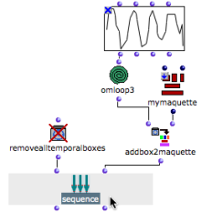
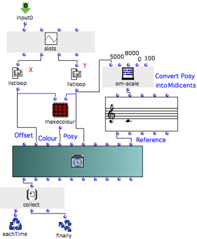
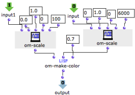
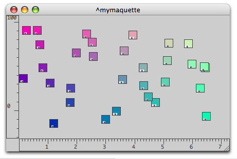
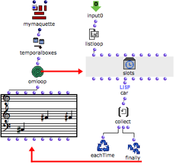
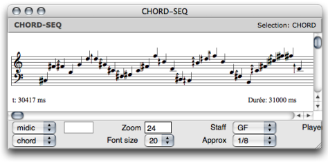

OpenMusic DocumentationHiérarchie de section : OM 6.6 User Manual > Maquettes > Maquettes in Patches > Reference Mode > Interation (2)
OpenMusic DocumentationHiérarchie de section : OM 6.6 User Manual > Maquettes > Maquettes in Patches > Reference Mode > Interation (2)
Navigation : page précédente | page suivante
Attention, votre navigateur ne supporte pas le javascript ou celui-ci à été désactivé. Certaines fonctionnalités de ce guide sont restreintes.
TemporalBoxes Interaction : Examples (2)
Determining Colour and Pitch From "Posy" and "Offset"
The " posy " of TemporalBoxes in the maquette can be applied to both pitches and colour of the boxes. The graphic appearance of the maquette may be more or less musically significant.
Program

|
The position of the boxes is determined by a BPF. The same BPF is used for determining their pitch and colour. OMLoop iterates this operation to apply it to the a series of boxes located in a maquette.
|
OMLoop
The "colour program" used in the preceding example is integrated in an internal patch.
y-points are returned by listloop to om-scale successively : the pitch of a note object is defined.
X and y-points are returned to the "make-colour" patch, to the "offset" and to the "posy" inputs of the temporalbox instance : the colour, offset and "posy" are defined.
At each step of the loop, collect stores the value of a TemporalBox.
At the end of the loop, a list of values is returned to addbox2maquette by finally.

Inside the "make-colour" patch, x-points and y-points are converted into red and green values. |

|
Resulting Maquette
The result is visible after evaluating sequence. The corresponding musical sequence can be visualized with a small program.

Musical Sequence
Program

|
Temporalboxes is connected to the output of the maquette. OMLoop returns the series of pitches produced by the TemporalBoxes to a chord-seq.
|
Resulting Sequence
The evaluation of the chord-seq box in the patch yields the following sequence :

Références :
Plan :
Navigation : page précédente | page suivante
A propos...(c) Ircam - Centre Pompidou